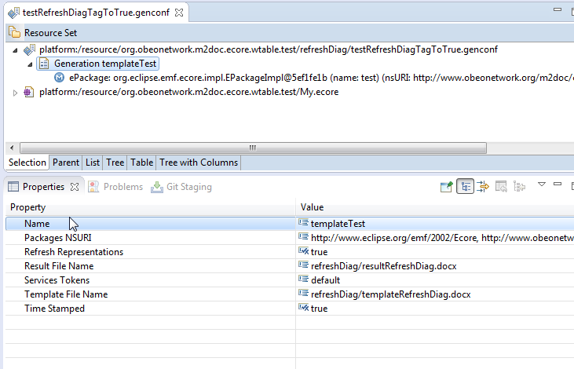
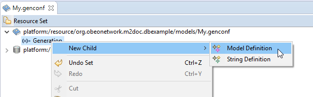
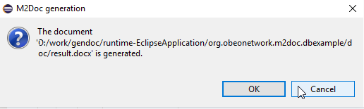

The M2Doc technology adopts an approach where the document authoring tools (Libre Office, Open Office, MS Word) are leverage as much as possible. What other tool is more adapted to style and static part authoring?
Furthermore, these tools are quite common and widely adopted so that there’s no necessity to learn yet another document authoring tool. Last but not least, there’s a great deal of document models legacy all over the places that should be reused as easily as possible.
Templates are made of static parts and dynamic parts. Static parts are produced in the generated document as they are in the templates while dynamic parts are replaced by some text which depends on the provided input models. Dynamic parts are provided in fields so that there’s always a clear separation between static and dynamic parts.
The edition of template must be made in a mode where field codes are visible. In MS Word, you can toggle this mode on/off by pressing Alt-F9. When the mode is on, you should see {field} like the next picture shows:
To insert a new field, press Ctrl-F9. You obtain an empty field like this:
 That you must edit to provide the code and instructions.
That you must edit to provide the code and instructions.
The next section gives all the details that are necessary to edit M2Doc generation tags. Alternatively, if you start you’re template from the provided model (templateModel.dotx), you can use the Insert > QuickPart > AutoText to insert M2Doc generation tags. Once you know the tag, it might be faster to just edit them.
You must toggle field codes on to read this document.
M2Doc provides some generation tags that have fixed formats. Those tags are described below:
{m:<query>} : the directive is replaced with the string representation of the query’s evaluation result
{m:for <var> | <query>} iterated body { m:endfor } : the directive is replaced by the iterated generation of the body over a collection of values. The specified variable is successively bound to the values of the evaluated collection so that it is accessible from queries inside the body.
{m:if <expression1>} true branch { m:elseif <expression2> } { m:elseif <expression-n>} { m:else } {m:endif } : conditional generation. The first branch among the if and elseif directives which expression evaluates to true is processed. If no expression evaluates to true, the else branch is processed (if present).
{m:image file:"image file path" width:"image insertion width" height:"image insertion height" legend:"image legend" legendPos:"above/below"} : inserts the image which file is specified (through a path relative to the eclipse project where the generation model is placed). The insertion will have the specified width, height and a legend will be inserted at the specified position if one is specified (default is below).
{m:bookmark <name query>} book marked content { m:endbookmark } : creates a book mark with a name (name query) and a content (book marked content).
{m:userdoc <query>} user document part body {enduserdoc} : This tag in template produces following document part
{m:userContent <id>} Generated user document part body {endContent} in generated document if generated document doesn’t already exist. If it already exists the usercontent part with good id of old document is copied in the new generated document. Be careful, if in old generated document a usercontent with an id whose never been produced by template generation, the old usercontent will be lost.
{m:link <book mark name query> <text query>} : creates a link to a book mark. The «book mark name query» is the same name as the one defines in {m:bookmark <name query>}. «text query» is the text used for the reference.
Example:
{m:bookmark 'myBookmark'} my bookmark content { m:endbookmark }
{m:link 'myBookmark' 'reference to myBookmark'}
will produce:
my bookmark content { REF myBookmark \h }
M2Doc provides a way to extend its information retrieval for a tag by registering a provider by an extension point. Each provider uses its own options in addition of the one generically provided par M2Doc core. Many providers can be associated to a same kind of tag and any one of those can be choose to retrieve information in a tag.
M2doc gives a way to insert Sirius diagrams: you have to install the Sirius provider feature coming with M2Doc installation.
The diagram tag has the following syntax:
{m:diagram}, with the following options:
The default way to get a diagram is by its name. If several diagrams have the same name, it will get the first.
However, if the behavior is not enough, you can define your own diagram provider and refers it in ‹provider› option tag. See the developer guide to add one.
Some examples:
m:diagram title:"'Diagram name'": get the first diagram named ‹Diagram name› in the modeling project. The diagram size is the export image size.
m:diagram title:"self.name": if ‹self.name› is ‹My Diagram›, get the first diagram named ‹My Diagram› in the modeling project.
m:diagram title:"'Diagram name'" width:"200" height:"200": get the first diagram named ‹Diagram name› in the modeling project. The diagram picture will be resize to 200x200.
m:diagram title:"'Diagram name'" layers:"layer1, layer2": get the first diagram named ‹Diagram name› in the modeling project and apply the two layers layer1 and layer2. The current diagram is not modified.
Warning: do not forget the ' around the string in an AQL Expression:
title:"'Diagram name'"
M2Doc provides a way to insert tables in a word document that will reproduce sirius table representations.
The table tag has the following syntax:
{m:wtable}. We chose to use ‹wtable› instead of ‹table› to avoid as much as possible name conflicts with existing M2Doc templates in which ‹table› could have been used as a variable name.
M2Doc provides two implementations of table providers, one based on the table title, the other based on a representation ID and a model object.
false. Can be used to not insert a title above the table in the output document.
Some examples:
m:wtable title:"'Table name'" hideTitle:"true": Generate all the table representations named ‹Table name› in the modeling project into the output document, without preceding these tables by their title.
m:wtable descriptionId:"<Technical ID of table description, as declared in odesign>" object:"myVariable": Generate all the table representations attached to the object referred by
myVariable (which could be a more complex AQL expression) and whose representation ID is ‹<Technical ID of table description, as declared in odesign>› into the output document.
Warning: do not forget the single quotes ' around the string in an AQL Expression:
title:"'Table name'". The description ID does not need such quotes because it is of type String.
In the cases of generating a diagram with {m:diagram} or a table with {m:wtable}, the M2Doc generation can take place on an unsynchronized representation (diagram or table). Consequently, a parameter has been introduced in the genConf model to allow users to specify whether representations must be refreshed before the M2Doc generation.

The boolean parameter «refreshRepresentations» can be used to define following update strategy :
- if it is set to false, the M2Doc generation take the state of graphical model without update it
- if it is set to true, the M2Doc generation take the updated with semantic model and arranged model like if we open diagram or table in Sirius representation view.
By default, the parameter is set to false.
Be careful, enabling the automatic update of representations can be time-consuming and could have a high impact on the generation time, especially on large models.
In case of enabling the automatic update of representations, if SIRIUS view is not open, the update and arrange effect is automatically save on graphical model. On the other hand, if SIRIUS view is open, the arrange and update is done by view. Your representation was dirty until you save your graphical diagram and the M2Doc Generation is done with update whatever the value of the «refreshRepresentations» parameter.
The style of the fragments of generated documents is determined by the style of the templates parts.
{m:table.comments} will produce comments in orange while {m:table.comments} will produce comments in black.
There’s no specific tag required to create a dynamic table. Here is an example of a dynamic table description to provide a database table’s details:

Table { SEQ Tableau \* ARABIC } : tables description
It is sufficient to enclose the dynamic part in a generation tag. Here, we have a simple iteration tag. We could have a combination of iteration and conditional tags or whatever other combinations is necessary.
Note: invisible characters might sneak in between the two table fragments (the header and the iterated body). Toggle on the mode where these characters are shown and remove them, if there are any, after the for tag.
Creation of dynamic lists is quite similar to dynamic tables: there’s no specific tag required. As bulleted or numbered lists are style attributes the style is carried from the template to the generated doc as is:
Tables for database { m:db.name }
{ m:for table | db.tables }
Note: for the bullets to be correctly spaced and so that there’s no spurious carriage return introduced, the endfor tags must be on bullets at the same level as the corresponding tag (as above).
Hyperlinks are WORD fields looking like the following example {HYPERLINK «http://www.obeo.fr»}.
If you want to dynamically retrieve the link with an AQL expression, it is possible. Just adds the request in a WORD field in the double quote like that:
{HYPERLINK "m:" http://www.obeo.fr "}
Warning : This feature is currently an experimental one. In some context it may be not working.
Headings are just treated like tables and lists are: the style makes it all.
Here’s how we would create headings that corresponds to a database tables:
{ m:for table |db.tables } Table { m:table.name }
Description:
{ m:table.comments }
{ m:for col |table.columns } Column { m:col.name }
Description :
{ m:col.comments }
{ m:endfor }
{ m:endfor }
Insertion of table of contents has no interactions with the templating. The table of content is just a field which is processed by Word which collects all the headings. The only requirement is to make an update of the field right after document generation.
To write AQL expressions, variables are useful to simplify the syntax and to have an easy access to model elements.
Variables can be defined in the template document with template properties:

With this example, we can write AQL expressions like
m:author or m:db.name.
The variables names have to be set with
m:var: prefix:
m:var:author will define ‹author› variable. The variables values defines the variable type (author is a string and db a model element database::Database).
The possible basic types are ‹int›, ‹real›, ‹string›, ‹boolean›, ‹date›. To type an object, you have to set its domain class like in AQL syntax:
prefix::ClassName (database::Database).
These variables are automatically imported in the configuration model where you can value them. If you do not define the variable in the template document, you will have to do it in the configuration model (see Configure variables definitions paragraph) .
As of now, custom properties are not implemented and a generation configuration model must be used to generate a document from a template.
Document generation is done in three steps:
We provide a step by step tutorial that explains how to generate a document from a database model. To start with, M2Doc and the database DSL must be installed in your bundle. Then, import the example modeling project (org.obeonetwork.m2doc.dbexample) in your workspace. (File>Import>General>Existing Project into Workspace). The example project in on github: https://github.com/ObeoNetwork/M2Doc/tree/master/doc/example/org.obeonetwork.m2doc.dbexample .
Open the project. You should have this folder layout:

We will keep the existing configuration model (.genconf) and create another one to document the procedure.
First, initialize the configuration model: right click on the template file >Initialize Documentation Configurations:

The configuration model is created by default near the template.

You will have to set those two URIs in the Package NSURI attribute:
If you are in a Modeling project with a database model and have installed M2Doc Sirius extension, these two URIS are set automatically.
and the result file name.
The resulting property sheet should look like this:

Now, you have to configure the variables definitions. If these variables are set in the template file, they are automatically added to the configuration model and you just need to value them.
Otherwise, you have to create these variables definitions.
Two kind of variable definitions can be created:

You can also use the palette tool and select the model element value.

If you do not have Sirius, you have to set the variable via the genconf EMF Editor:
First, you have to load the main database resource:

Select the database model that is in the model directory:

Now that the database resource is loaded, we will be able to use model element in it as variable’s values.
We first create a string variable, key=‹author›, value=‹John Doe›:

And a model variable:

Set the values of the variables in the property view. The model variable must be defined like follows:

You just have to invoke the generation by right clicking on the generation model element:

A message indicates everything went well:

Refresh the ‹doc› directory if needed. The result should be in it.
When the generation is launched, we first run a template validation. If this validation gets errors, an error file will be generated near the generated result file.
The template validation can also be started alone, if it gets errors, an error file will be generated near the template file.

The template validation checks: